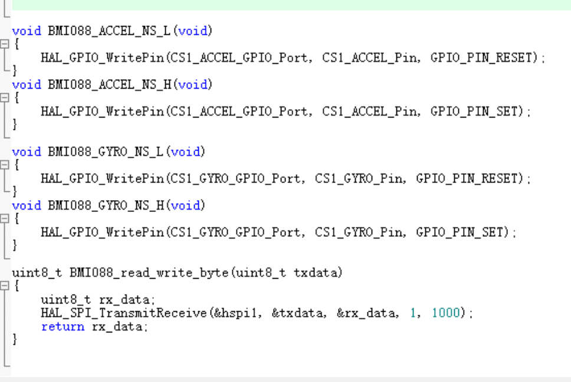

|
电控组文档 v1.0.0
鸿雁战队RoboMaster
|
|
电控组文档 v1.0.0
鸿雁战队RoboMaster
|
全拼小写，尽量不使用下划线。 例如can.c/gpio.c。
如果是一个库中的文件，则为了标识库，可以在开头加上库名称的缩写，例如
// OSLIB库中
oslib_can.c
// SteerWheel库中
sw_chassis.c
借鉴OOP思想，使用驼峰式命名（首字母大写）+下划线，利用下划线指明所属关系。 示例：假如函数在paw.c中
从函数名就可以看出这些函数属于paw.c，**set/get**指明函数功能，**Switch1、Switch2**指明子类型。
catch_throw.c可以缩写成*ct*。catch_throw.c中：CT_Paw_Rotate_Mode_Flag的变量名是**不合适**的，因为**Rotate Mode**是一个完整的功能描述，并不存在从属关系，不应使用下划线，合理的命名方式应该是CT_Paw_RotateMode_Flag。使用驼峰式命名（首字母大写），不允许有下划线，在结构体名的后面加上_s(struct)。例如
使用全大写+下划线格式，宏函数需要在开头追加两个下划线以区分。
例如：
#ifdef等条件编译请顶格，且在#endif之后写上一个注释，注明这个#ifdef块对应的内容：
为了避免ENUM值在全局空间内冲突，ENUM的成员需要添加功能缩写前缀以表示命名空间。
枚举体别名使用驼峰命名法（首字母大写），末尾追加_e(enum)，例如：
函数尽量添加注释，使用==doxygen==注释风格，示例如下：
可以在VS Code中安装插件Doxygen Documentation Generator，代码中键入/**后按回车就可以自动生成函数注释。
if、while等语句，即使内容只有一行，也需要使用花括号{}包含。{}的左括号和右括号要垂直对齐。UTF-8编码，避免乱码的现象发生。alt+shift+f格式化代码，使其看起来更整洁。其实上面的是机器人队往年流传的规范，变量类型我稍微改了改
命名规范其实只是代码规范的一小部分，规范应当包含开发思想等内容，下面是一些额外的补充
可参考C语言规范
请不要用float，int，DWORD等作为变量类型，这无法知道变量大小，在编写通信协议和优化程序大小时非常不方便，且在不同编译器下可能的变量大小不一致。请#include "struct_typedef.h"，其中包含了类型的定义
请测试不同编译器情况下类型大小定义是否正确。
其中关于大小要注意sizeof的大小，sizeof(枚举类型)在不同编译器下大小不一致，有可能是4字节，也有可能是1字节。在编写通信协议时记得让结构体内存对齐，用PACKED宏定义
禁止使用malloc、free、calloc等类似操作。
单片机内存空间很小，且由于开发特性，其实完全不需要malloc动态申请内存空间，反倒malloc后由于人为失误忘记free，或由于if-else等控制流编写错误导致free两次，令程序堆溢出或其他错误。这对程序是致命的，在日常情况下，由于测试情况不够广泛，导致仅当某些小概率情况会产生错误。
所以在所有情况下都应当先定义好内存空间，例如数组等操作，这样能令单片机的内存空间大小得到很好的管理。
其次是缓冲区溢出问题，尽量减少使用sprintf，sscanf等函数，可用其他方法替代，例如sscanf替换成自定义解析协议。
不可否认的是某些情况下使用goto是好的，但大多数情况下goto会令代码控制流不清晰，且实际不存在必须使用goto的情况。在水平参差不齐的本科团队中，goto非常不利于管理及调试。所以如有用goto的情况，请重构代码。
嵌套三层以上if-else语句会令代码可读性大幅下降，需要注意的是条件编译的#ifdef或#if也算在其中，下面是个真实的例子
可见虽然实现了效果，但可读性十分之低，使用条件编译时应当尽量只有一层嵌套，将多层嵌套换成一层。
函数的代码块嵌套深度指的是函数中的代码控制块（例如：if、for、while、switch等）之间互相包含的深度。每级嵌套都会增加阅读代码时的脑力消耗，因为需要在脑子里维护一个“栈”（比如，进入条件语句、进入循环„„）。应该做进一步的功能分解，从而避免使代码的阅读者一次记住太多的上下文。
“程序必须为阅读它的人而编写，只是顺便用于机器执行。”
——Harold Abelson 和 Gerald Jay Sussman
“编写程序应该以人为本，计算机第二。”
——Steve McConnell
这部分详细请看排版与格式，其中部分已在2 书写规范提过。
例如在开发BMI088芯片（6轴传感器）的驱动，参考RM官步的BMI088driver.c，BMI088driver.h，BMI088Middleware.c

在编写驱动时将读写字节，CS拉高拉低操作的函数添加到一个新的文件内进行编写，这大大增加了可移植性，将实现解耦，且内部函数用了static定义。
作者注：RM官步代码在规范上尚未做好，例如文件的命名没有统一格式，例如
BMI088Middleware.c和ist8310driver_middleware.c，且某些功能实现上可读性稍差，特别是云台和底盘的部分。
我个人不建议将一些基础驱动例如SPI或GPIO新增一个Middleware文件，应当在驱动实现的头文件添加定义方便移植。若头文件较大可新增一个头文件专门定义驱动相关的实现。
其实这RM的实现方法没有问题，我个人感观在代码量少的情况下，代码量不变，文件越多反倒降低了可读性，因为需要来回查找文件。
有注释当然是好的，但是注释太多就很恶心了。千万不要在注释里面解释你的程序怎么运行的。相对于尝试用注释解释清楚你那恶心的代码，你还不如就写个清晰易懂（译者注：就是小而精，萌妹子一样单纯的~）的函数。
摘自 Linux内核C编程规范
这部分详细请看C语言规范-注释，其中要注意的是
在代码的功能、意图层次上进行注释，即注释解释代码难以直接表达的意图，而不是重复描述代码。
在写代码的过程中一直在考虑规范性问题有时候也挺讨厌的，但代码规范确实有利于队伍传承，所以队公共库还是尽量按规范。对于北邮目前的情况而言，Robomaster超级对抗赛，其实实际一台机器人也就一个电控组队员实现。传承什么的，还是别考虑了，有时还是自私一点好，自身学到知识了就行。